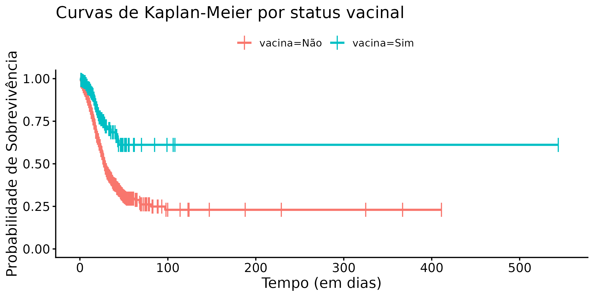
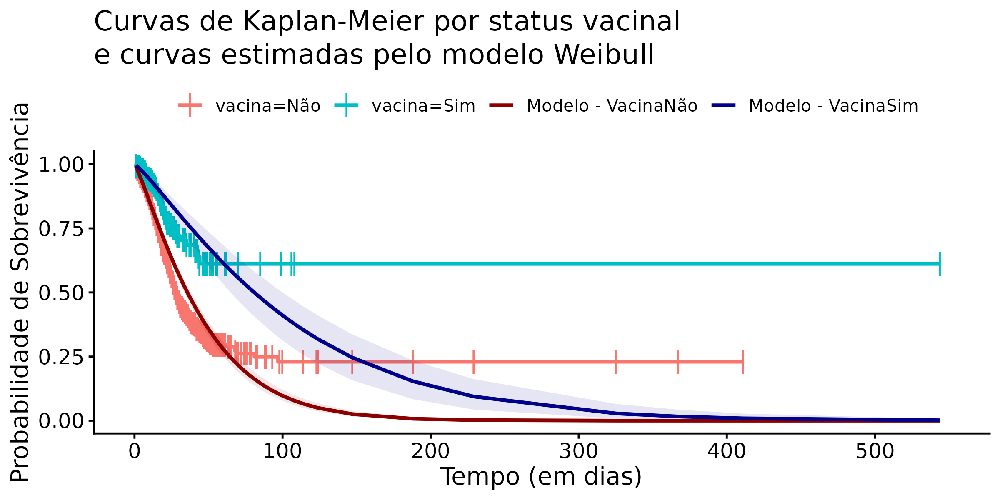
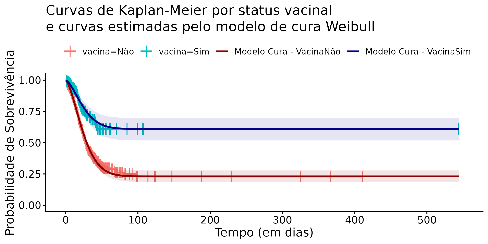

Modelos de mistura com fração de cura em R utilizando o pacote flexsurvcure
Este post apresenta modelos de cura na Análise de Sobrevivência, uma abordagem essencial para dados em que uma parcela dos indivíduos nunca experimenta o evento, ilustrada com uma aplicação a dados de COVID-19
Estatística
Análise de Sobrevivência
R
Autor
Esley Caminhas Ferreira
Data de Publicação
1 de fevereiro de 2026
Introdução
Se você trabalha com áreas como saúde, confiabilidade ou mesmo ciências sociais, provavelmente já se deparou com a pergunta: “Quanto tempo leva até que um determinado evento ocorra?”
A Análise de Sobrevivência é uma área da estatística criada exatamente para responder a essa questão. Ela lida com dados de “tempo até o evento”, onde o “evento” pode ser a morte de um paciente em tratamento, a falha de um equipamento eletrônico, a reincidência de um indivíduo que já passou pelo sistema prisional, entre outros.
A grande particularidade dessa área é a capacidade de extrair informação de dados censurados. Uma observação é censurada quando não observamos o evento de interesse, ou seja, temos apenas uma observação parcial.
Como exemplo simples de censura, imagine pacientes com leucemia acompanhados até que tenham uma recidiva. Se, para um determinado paciente, o estudo termina enquanto ele ainda está em remissão (ou seja, não apresentou o evento), então o tempo de sobrevivência desse paciente é considerado censurado. O mesmo ocorre se a pessoa sai do estudo antes do fim estando em remissão. Em ambos os casos, sabemos apenas que o paciente não teve recidiva até aquele momento, mas não sabemos se ou quando ela ocorreria depois.
Para análises de sobrevivência em R, o pacote survival oferece ferramentas fundamentais como survfit(), coxph() e survreg(). Já o pacote flexsurv expande essas possibilidades, focando em modelos paramétricos flexíveis e com maior detalhamento.
Neste estudo, foram abordados especificamente modelos de mistura com fração de cura e sua aplicação a dados de sobrevivência relacionados à COVID-19, utilizando a função flexsurvcure() do pacote flexsurvcure.
Esses modelos são especialmente adequados para cenários onde uma fração da população pode ser considerada não suscetível, “imune”, ou “curada”, dessa forma nunca experimentando o evento de interesse. Essa suposição é plausível no contexto dos dados de COVID-19, em que o evento de interesse é o óbito, uma vez que parte dos indivíduos infectados evolui para recuperação completa, sem risco subsequente desse desfecho.
Situações desse tipo são bastante comuns em aplicações reais, o que torna os modelos de mistura com fração de cura particularmente adequados para capturar a presença de indivíduos não suscetíveis e descrever de forma mais fiel a dinâmica do tempo até o evento.
Sobre a função de sobrevivência e suas suposições
No cerne da análise de sobrevivência está a função de sobrevivência \(S(t)\), que representa a probabilidade de um indivíduo “sobreviver” além do tempo \(t\), ou seja, não ter experimentado o evento de interesse até esse momento. Formalmente:
\[S(t) = P(T > t).\]
onde \(T\) é a variável aleatória que representa o tempo até a ocorrência do evento.
De acordo com Kleinbaum & Klein (2012), funções de sobrevivência apresentam três características fundamentais:
São não crescentes: diminuem monotonicamente à medida que o tempo \(t\) avança.
Em \(t = 0\), \(S(0) = 1\): no início do estudo, a probabilidade de sobrevida é 1.
Quando \(t \to \infty\), \(S(t) = 0\): com tempo longo o suficiente, todos os indivíduos eventualmente experimentarão o evento.
Fonte: Kleinbaum & Klein - “Survival Analysis: A Self-Learning Text”
Sobre os dados
Obtido em opendataSUS SRAG o conjunto de dados contém registros de Síndrome Respiratória Aguda Grave (SRAG) por COVID-19 em pacientes do sexo feminino na faixa etária de 10 a 55 anos, com confirmação de condição de puérpera ou parturiente, que foram hospitalizadas no período de 2020 a 2024. Foram considerados somente os casos em que a data de internação é superior a 01/01/2020. O conjunto possui um total de 5319 observações (desconsiderando observações com dados faltantes) das variáveis tempo, dias entre data de internação e data da alta ou óbito (para essa análise foram desconsiderados os casos em que o tempo é igual a 0), indicadora, variável indicadora de óbito por SRAG, e vacina, variável que diz se a paciente recebeu vacina de COVID-19.
Após a importação dos dados previamente tratados, a função head(n = 10) foi utilizada para a visualização das dez primeiras linhas do conjunto de dados, permitindo uma inspeção inicial da sua estrutura e das variáveis disponíveis:
Código
dados <-read.csv("data/srag_filtrado_puerperas.csv")dados |>head(n=10)
tempo indicadora vacina
1 26 1 Não
2 3 0 Não
3 1 0 Não
4 3 0 Não
5 13 0 Não
6 11 1 Não
7 6 0 Sim
8 68 1 Não
9 27 0 Não
10 18 0 Não
A função summary() fornece estatísticas descritivas básicas de uma váriavel númerica, incluindo o valor mínimo, os quartis (1º quartil, mediana e 3º quartil), a média e o valor máximo.
Código
summary(dados$tempo)
Min. 1st Qu. Median Mean 3rd Qu. Max.
1.000 2.000 5.000 9.853 12.000 544.000
No caso, o tempo de acompanhamento variou de 1 a 544 dias, com mediana de 5 dias e média de 9.9 dias. A distribuição é assimétrica à direita, indicando que a maioria dos eventos ocorre nos primeiros dias, enquanto poucos indivíduos apresentam tempos de acompanhamento bastante prolongados.
A função table() é utilizada para obter a distribuição de frequências absolutas das categorias de uma variável categórica, permitindo uma visão geral do indicadora observado no estudo.
Código
table(dados$indicadora)
0 1
4492 827
Do total de 5319 casos analisados, 827 (15.5%) evoluíram para óbito, enquanto 4492 (84.5%) foram censurados, seja por alta hospitalar, óbito por outras causas ou pelo término do acompanhamento.
Código
table(dados$vacina)
Não Sim
4070 1249
A cobertura vacinal foi de 23.5%, com 1249 mulheres vacinadas e 4070 não vacinadas.
Aplicações usuais utilizando o pacote survival e flexsurv
A estrutura de dados clássica do pacote survival é o objeto Surv, responsável por encapsular simultaneamente o tempo de sobrevivência e a informação sobre a ocorrência do evento ou censura. No código a seguir, a função Surv() foi utilizada para construir esse objeto a partir da variável de tempo (dados$tempo) e da variável indicadora do evento (dados$indicadora):
Utilizando o objeto Surv criado e a função survfit(), foi obtida a estimativa de Kaplan-Meier, que é um estimador não paramétrico da função de sobrevivência, estratificada pela variável vacina:
Código
km <-survfit(sob_obj ~ dados$vacina)
Ao estratificar pela variável vacina, a função survfit() gera uma curva separada para cada grupo. Dessa forma, é possivel comparar visualmente se há diferença na sobrevivência ao longo do tempo entre os grupos.

Curvas de Kaplan–Meier por status vacinal
O gráfico revela que pacientes não vacinadas apresentam um declínio mais rápido e acentuado na probabilidade de sobrevivência.
O modelo de Kaplan-Meier, é puramente descritivo e não-paramétrico: ele estima a sobrevivência sem assumir uma forma matemática para os dados. Para quantificar o efeito das variáveis e fazer inferência estatística, avançamos para modelos de regressão. Ainda utilizando o pacote survival podemos ajustar tanto o modelo semiparamétrico de Cox utilizando a função coxph() quanto modelos paramétricos utilizando a função survreg().
Para modelos paramétricos mais detalhados, temos a função flexsurvreg() do pacote flexsurv, que oferece maior flexibilidade na especificação de distribuições e fornece estimativas diretas dos parâmetros originais das distribuições. No código abaixo, foi ajustado um modelo Weibull incluindo a covariável vacina:
Por padrão, quando especificada dessa forma, a covariável é inserida no parâmetro de localização da distribuição, geralmente o parâmetro de scale ou rate. Como a distribuição Weibull foi utilizada, o modelo ajustado pode ser expresso como:
em que \(k > 0\) é o parâmetro de forma (shape) e o parâmetro de escala (scale) depende da covariável vacina, representada por \(X\), por meio de uma ligação log-linear
\[\lambda(X) = \exp\{\beta_0 + \beta_1 X\}.\] Para inspecionar os parâmetros estimados e as principais medidas de ajuste do modelo ajustado, foi utilizada a função print() aplicada ao objeto retornado por flexsurvreg():
Código
print(flex_weibull_model)
Call:
flexsurvreg(formula = sob_obj ~ vacina, data = dados, dist = "weibull")
Estimates:
data mean est L95% U95% se exp(est) L95%
shape NA 1.1789 1.1326 1.2270 0.0241 NA NA
scale NA 48.7846 45.6480 52.1367 1.6541 NA NA
vacinaSim 0.2348 0.8169 0.5916 1.0422 0.1149 2.2634 1.8069
U95%
shape NA
scale NA
vacinaSim 2.8353
N = 5319, Events: 827, Censored: 4492
Total time at risk: 52407
Log-likelihood = -4194.517, df = 3
AIC = 8395.034
De forma geral, a saída resume os principais resultados do ajuste do modelo. A seção Call descreve o modelo especificado, incluindo a fórmula, o conjunto de dados utilizado e a distribuição assumida.
A tabela Estimates apresenta as estimativas dos parâmetros do modelo. A coluna data mean indica a média empírica da covariável associada a cada coeficiente. Para cada parâmetro, são mostrados o valor estimado (est), o erro-padrão (se) e o intervalo de confiança de 95% (L95% e U95%). Quando aplicável, a coluna exp(est) exibe a exponencial do coeficiente, o que facilita a interpretação de efeitos das covariáveis, já que estas entram de forma log-linear no modelo.
Os parâmetros shape e scale descrevem a forma e a escala da distribuição Weibull, caracterizando o comportamento básico do tempo de sobrevivência. Já o termo vacinaSim representa o efeito da covariável no parâmetro de escala do modelo.
Na parte final, são apresentados resumos do conjunto de dados e do ajuste global do modelo, como o número total de observações, eventos e censuras, o tempo total sob risco, o valor da log-verossimilhança e o AIC. Essas medidas são úteis para avaliar o ajuste do modelo e compará-lo com modelos alternativos.
Tambem é possivel obter diretamente os coeficientes estimados do modelo utilizando a função coef():
Nesse caso, os valores estimados foram \(k = 0.1645\), \(\beta_0 = 3.8874\) e \(\beta_1 = 0.8168\).
Para avaliar graficamente o ajuste do modelo paramétrico Weibull em relação à estimativa não paramétrica, foram construídas curvas de sobrevivência estimadas pelo modelo para cada grupo de status vacinal, juntamente com seus respectivos intervalos de confiança. Essas curvas foram sobrepostas às curvas de Kaplan–Meier previamente obtidas, permitindo uma comparação direta entre as abordagens paramétrica e não paramétrica.

A partir do gráfico, observa-se de forma clara a motivação central deste estudo e a limitação do modelo paramétrico usual. Enquanto as curvas estimadas pelo modelo Weibull apresentam o comportamento esperado, tendendo a zero à medida que o tempo aumenta, as curvas não paramétricas de Kaplan–Meier exibem um platô, convergindo para um valor diferente de zero.
O modelo de mistura com fração de cura
Uma das suposições fundamentais da função de sobrevivência, e por consequência dos modelos clássicos de análise de sobrevivência, é que todos os indivíduos eventualmente experimentarão o evento de interesse \(\big(S(\infty) = 0\big)\).
Esta suposição, no entanto, é violada quando existe uma fração de cura na população, ou seja, um subgrupo de indivíduos que, por características próprias, nunca experimentará o evento.
Essa violação torna inadequada a aplicação de modelos e métodos tradicionais, uma vez que a função de sobrevivência não tende a zero, mas estabiliza em um patamar superior a zero, refletindo a proporção da população considerada “curada” ou “imune”.
O modelo conhecido como de mistura padrão, que aqui tratamos como modelo de mistura com fração de cura, proposto por Boag (1949), e posteriormente desenvolvido por Berkson e Gage (1952), resolve essa limitação ao reformular a função de sobrevivência populacional como uma combinação ponderada de dois subgrupos: indivíduos imunes (que nunca experimentarão o evento) e indivíduos suscetíveis (que ainda estão sob risco).
\[S(t) = \theta + (1-\theta)S_0(t).\] Onde:
\(\theta\) representa a fração de cura, ou seja, a proporção de indivíduos imunes ao evento.
\(1 - \theta\) é a proporção de indivíduos que eventualmente experimentarão o evento.
\(S_0(t)\) é a função de sobrevivência dos indivíduos suscetíveis.
Nesta formulação, a função de sobrevivência populacional \(S(t)\) não mais tende a zero quando \(t \to \infty\), mas converge assintoticamente para \(\theta\):
\[\lim_{t \to \infty} S(t) = \theta.\]
Isso permite modelar adequadamente situações onde parte da população nunca apresentará o evento de interesse, oferecendo uma representação mais realista dos mecanismos de sobrevivência em populações heterogêneas.
Além disso, em modelos de regressão com fração de cura, podemos incluir covariáveis no componente de cura. Isso permite investigar não apenas quais fatores afetam o tempo até o evento, mas também quais características influenciam a probabilidade de um indivíduo não ser suscetível ao evento de interesse, ou seja, pertencer a fração de curados ou imunes. Dessa forma, é possível identificar preditores associados à cura.
Essa análise pode ser implementada de forma simples em R utilizando o pacote flexsurvcure.
Modelo de mistura com fração de cura utilizando o pacote flexsurvcure
Por ser uma extensão natural dos pacotes survival e flexsurv, o pacote flexsurvcure preserva uma sintaxe familiar ao usuário, na qual a função flexsurvcure() desempenha papel análogo ao da função flexsurvreg(), porém incorporando a possibilidade de ajuste de modelos de mistura com fração de cura.
link = "logistic": Determina a função de ligação da fração de cura \(\theta\) com as covariaveis, para o nosso caso a covariavel vacina.
dist = "weibull": Determina a distribuição da função de sobrevivência relativa aos indivíduos suscetíveis \(S_0(t)\).
mixture = TRUE: Especifica que a função ajustará um modelo de mistura com fração de cura.
Por padrão, ao especificar Surv(tempo, indicadora) ~ vacina na função flexsurvcure, a covariável vacina é incluída apenas no parâmetro de fração de cura do modelo.
Para o modelo ajustado, a função de sobrevivência populacional pode ser expressa como
\[S(t \mid X) = \theta(X) + \big(1 - \theta(X)\big)\exp\Bigg[-\left(\frac{t}{\lambda}\right)^k\Bigg],\] em que \(X\) representa o status vacinal e \(k > 0\) e \(\lambda > 0\) são, respectivamente, os parâmetros de forma e de escala da distribuição Weibull, que descreve o tempo até o evento entre os indivíduos suscetíveis.
A fração de cura, ou de indivíduos imunes ao evento de interesse, \(\theta(X)\), é modelada em função das covariáveis por meio de uma função de ligação logística,
\[\theta(X) = P(\text{cura} \mid X)
= \frac{\exp\{\gamma_0 + \gamma_1 X\}}{1 + \exp\{\gamma_0 + \gamma_1 X\}},\] relacionando diretamente a probabilidade de um indivíduo pertencer à subpopulação não suscetível ao seu status vacinal.
A seguir, apresenta-se a saída do modelo ajustado por meio da função flexsurvcure().
Código
print(cure_model)
Call:
flexsurvcure(formula = Surv(tempo, indicadora) ~ vacina, data = dados,
dist = "weibull", link = "logistic", mixture = TRUE)
Estimates:
data mean est L95% U95% se exp(est) L95%
theta NA 0.2305 0.1861 0.2819 NA NA NA
shape NA 1.5520 1.4766 1.6311 0.0394 NA NA
scale NA 28.2624 26.2009 30.4861 1.0921 NA NA
vacinaSim 0.2348 1.6521 1.2218 2.0824 0.2196 5.2180 3.3933
U95%
theta NA
shape NA
scale NA
vacinaSim 8.0240
N = 5319, Events: 827, Censored: 4492
Total time at risk: 52407
Log-likelihood = -4091.464, df = 4
AIC = 8190.928
A estrutura da saída do modelo é análoga àquela produzida anteriormente pela função flexsurvreg(), apresentando as estimativas dos parâmetros, seus intervalos de confiança e medidas globais de ajuste.
Observando a tabela Estimates, temos que theta igual 0.2305 corresponde à fração basal de cura para o grupo de referência, isto é, indivíduos não vacinados. Esse valor indica que, na ausência de vacinação, estima-se que aproximadamente 23.05% dos indivíduos pertençam à subpopulação não suscetível e, portanto, não experimentarão o evento de interesse (óbito por COVID-19). Em termos matemáticos,
Para o grupo vacinado, o coeficiente de 1.6521 no preditor linear se traduz em um odds ratio de 5.2180 (IC95%: 3.3933-8.0240). Isso indica que indivíduos vacinados têm 5.2 vezes mais chance de pertencer à fração de cura em comparação com não vacinados.
Com base nesses resultados, tem-se \(\gamma_0 = -1.2053\), \(\gamma_1 = 1.6521\), \(k = 0.4395\) e \(\lambda = 3.3415\). Substituindo essas estimativas na formulação do modelo, a função de sobrevivência populacional ajustada pode ser expressa como
\[S(t \mid X) = \theta(X) + \big(1 - \theta(X)\big)\exp\Bigg[-\left(\frac{t}{3.3415}\right)^{0.4395}\Bigg],\] em que a fração de cura é dada por
O resultado de aproximadamente 0.61 indica que 61% dos indivíduos vacinados pertencem à fração curada, representando um aumento substancial em relação aos 23% observados no grupo não vacinado.
De modo análogo à análise anterior, as curvas de sobrevivência estimadas pelo modelo Weibull com fração de cura foram sobrepostas às estimativas não paramétricas de Kaplan–Meier para cada grupo de status vacinal, juntamente com seus intervalos de confiança, permitindo avaliar o ganho de ajuste proporcionado pela inclusão da fração de cura.

A partir do gráfico, observa-se que as curvas estimadas pelo modelo de mistura com fração de cura acompanham adequadamente o comportamento das estimativas não paramétricas de Kaplan–Meier, incluindo o platô observado em tempos longos. Esse resultado indica que o modelo de cura é capaz de capturar a presença de uma subpopulação não suscetível ao evento de interesse, oferecendo uma representação mais adequada da estrutura de sobrevivência observada nos dados.
Como dito anteriormente, por padrão, as covariáveis especificadas na fórmula do modelo são incluídas apenas no componente que modela a fração de cura. No entanto, a função flexsurvcure() também permite que essas mesmas covariáveis sejam incorporadas aos parâmetros da distribuição que descreve o tempo até o evento entre os indivíduos suscetíveis, definida no argumento dist. Essa extensão é realizada por meio do argumento anc, conforme ilustrado a seguir:
A especificação anc = list(scale = ~vacina, shape = ~vacina) indica que tanto o parâmetro de escala quanto o parâmetro de forma da distribuição Weibull passam a ser modelados em função da variável vacina. Dessa forma, o efeito da vacinação é considerado simultaneamente na probabilidade de cura e na dinâmica temporal do evento para os indivíduos que permanecem suscetíveis.
Nesse caso, a função de sobrevivência populacional é dada por
agora explicitando que ambos os parâmetros da distribuição Weibull passam a depender das covariáveis. Sendo a fração de cura ligada a essas covariáveis por meio de uma função logística, enquanto os parâmetros da distribuição Weibull se relacionam às covariáveis de maneira log-linear.
Código
print(cure_model_anc)
Call:
flexsurvcure(formula = Surv(tempo, indicadora) ~ vacina, data = dados,
dist = "weibull", link = "logistic", mixture = TRUE, anc = list(scale = ~vacina,
shape = ~vacina))
Estimates:
data mean est L95% U95% se exp(est)
theta NA 0.2315 0.1864 0.2837 NA NA
shape NA 1.5429 1.4646 1.6253 0.0410 NA
scale NA 28.2495 26.1212 30.5512 1.1289 NA
vacinaSim 0.2348 1.5522 0.9182 2.1862 0.3235 4.7218
shape(vacinaSim) 0.2348 0.0651 -0.1176 0.2479 0.0933 1.0673
scale(vacinaSim) 0.2348 0.0179 -0.3173 0.3531 0.1710 1.0181
L95% U95%
theta NA NA
shape NA NA
scale NA NA
vacinaSim 2.5047 8.9013
shape(vacinaSim) 0.8890 1.2813
scale(vacinaSim) 0.7281 1.4235
N = 5319, Events: 827, Censored: 4492
Total time at risk: 52407
Log-likelihood = -4091.063, df = 6
AIC = 8194.125
Observa-se que, nesse ajuste, o modelo passa a incluir explicitamente o efeito da covariável vacina também nos parâmetros shape e scale da distribuição Weibull, além do componente de fração de cura. Dessa forma, a vacinação é considerada tanto na probabilidade de um indivíduo pertencer ao grupo curado quanto na dinâmica temporal do evento entre os indivíduos suscetíveis.
Entretanto, ao comparar esse modelo mais geral com a especificação mais simples, na qual a covariável atua apenas sobre a fração de cura, observa-se que o modelo mais parcimonioso apresenta menor valor de AIC, 8190, em comparação a 8194 do modelo com covariáveis em todos os parâmetros. Esse resultado indica um melhor equilíbrio entre qualidade de ajuste e complexidade do modelo. Além disso, os coeficientes associados a shape(vacinaSim) e scale(vacinaSim) não se mostram estatisticamente relevantes, uma vez que seus intervalos de confiança incluem o valor nulo, sugerindo ausência de efeito da vacinação sobre esses parâmetros da distribuição Weibull.
Os resultados são consistentes com as interpretações anteriores e sugerem que o principal efeito da vacinação se manifesta no componente de fração de cura, aumentando a probabilidade de os indivíduos pertencerem à subpopulação não suscetível ao evento, sem evidências de impacto substancial na forma ou na escala da distribuição do tempo até o evento entre aqueles que permanecem suscetíveis.
Conclusão
O modelo de mistura com fração de cura, viabilizado pelo pacote flexsurvcure, mostrou-se uma ferramenta apropriada para a análise de dados de sobrevivência em contextos nos quais uma parcela da população não experimenta o evento de interesse. No caso específico da COVID-19 em puérperas, os resultados obtidos indicam que:
A vacinação contra a COVID-19 está fortemente associada ao aumento da fração de cura, com mulheres vacinadas apresentando aproximadamente 5.2 vezes mais chance de pertencer a esse grupo em comparação às não vacinadas.
Enquanto cerca de 23% das puérperas não vacinadas integram a fração de cura, entre as vacinadas essa proporção se eleva para aproximadamente 61%.
O modelo foi capaz de capturar adequadamente o comportamento assintótico das curvas de sobrevivência, que convergem para patamares diferentes de zero, compatíveis com a existência de uma população efetivamente curada.
Esses achados reforçam a relevância da vacinação como estratégia de saúde pública, especialmente em grupos vulneráveis, como as puérperas. Além disso, a utilização de modelos de cura mostrou-se mais adequada do que abordagens tradicionais de análise de sobrevivência nesse cenário, no qual a suposição de que todos os indivíduos eventualmente experimentarão o evento não é plausível.
Por fim, a flexibilidade do pacote flexsurvcure, ao permitir a inclusão de covariáveis tanto no componente de fração de cura quanto nos parâmetros da distribuição de sobrevivência dos indivíduos suscetíveis, abre espaço para análises mais aprofundadas. Essa característica possibilita a investigação de outros fatores prognósticos relevantes e contribui para uma melhor compreensão dos mecanismos de proteção nessa população.
Referências
R Core Team (2025). R: A Language and Environment for Statistical Computing. R Foundation for Statistical Computing, Vienna, Austria. Disponível em: https://www.R-project.org/
Posit Team (2025). RStudio: Integrated Development Environment for R. Posit Software, PBC, Boston, MA. Disponível em: http://www.posit.co/
Kleinbaum, D. G. & Klein, M. (2012). Survival Analysis: A Self-Learning Text (3ª edição). Springer, New York. DOI: 10.1007/978-1-4419-6646-9
Boag, J. W. (1949). Maximum Likelihood Estimates of the Proportion of Patients Cured by Cancer Therapy. Journal of the Royal Statistical Society: Series B (Methodological), 11(1), 15–53.
Berkson, J. & Gage, R. P. (1952). Survival Curve for Cancer Patients Following Treatment. Journal of the American Statistical Association, 47, 501–515. DOI: 10.1080/01621459.1952.10501187